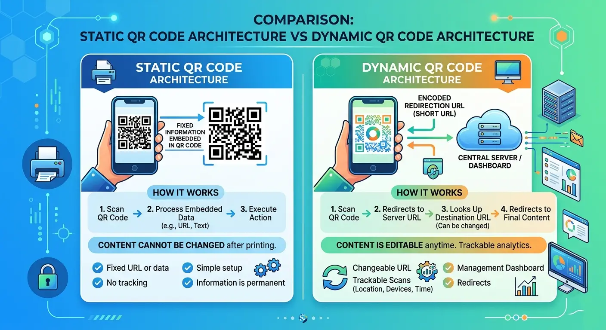

The Pros and Cons of Static QR Codes
Quick Response (QR) codes have transformed how businesses seamlessly connect physical touchpoints with digital experiences. Whether you are browsing a restaurant menu, opening a promotional page, or connecting to Wi-Fi, QR codes are ubiquitous. However, not all QR codes are built the same. Before launching your next campaign, understanding the pros and cons of static QR codes is essential for choosing the right technology.

What is a Static QR Code?
A static QR code stores information directly within its data pattern (the black and white square pixels). Once generated, the encoded destination—such as a fixed URL, contact vCard, plain text, or Wi-Fi login details—is permanently fixed into the matrix. Unlike dynamic QR codes, static QR codes do not rely on short links or redirect servers.
The Pros of Static QR Codes
- 1. Completely Free and Cost-Effective: Static QR codes carry no recurring subscriptions or setup fees, making them ideal for individuals and small businesses.
- 2. Permanent and Infinite Validity: Because the payload is embedded directly into the code, static QR codes never expire as long as the target content remains active.
- 3. Zero Dependency on Third-Party Servers: Scanners decode the data locally, so service outages on third-party redirection platforms won't break your QR code.
- 4. High Data Security and Privacy: With no tracking servers involved, user data is protected against unwanted tracking or data collection.
The Cons of Static QR Codes
- 1. Content Cannot Be Edited: Once printed, you cannot change or update the destination link. Fixing a simple typo requires reprinting all marketing materials.
- 2. Lack of Analytics and Tracking: Static QR codes offer no scan tracking—preventing you from analyzing scan counts, user location, or campaign performance.
- 3. Higher Pattern Density: Storing larger amounts of data increases the density of the square matrix, making dense QR codes harder to scan from long distances.
Static vs. Dynamic QR Codes Comparison
| Feature | Static QR Code | Dynamic QR Code |
|---|---|---|
| Editable Destination | No (Fixed forever) | Yes (Editable anytime) |
| Scan Analytics | None | Comprehensive |
| Expiration Risk | Never expires | May expire if subscription ends |
| Cost | Free | Paid / Subscription |
Static QR codes work best for permanent, non-changing data—such as Wi-Fi login access, personal vCard contacts, static email triggers, or one-time event details.
Conclusion
Understanding the pros and cons of static QR codes ensures you pick the right format. If you need a free, permanent link that won't rely on third-party servers, static QR codes are ideal. However, for dynamic business campaigns requiring analytics, flexibility, and editable links, dynamic QR codes are the clear choice.